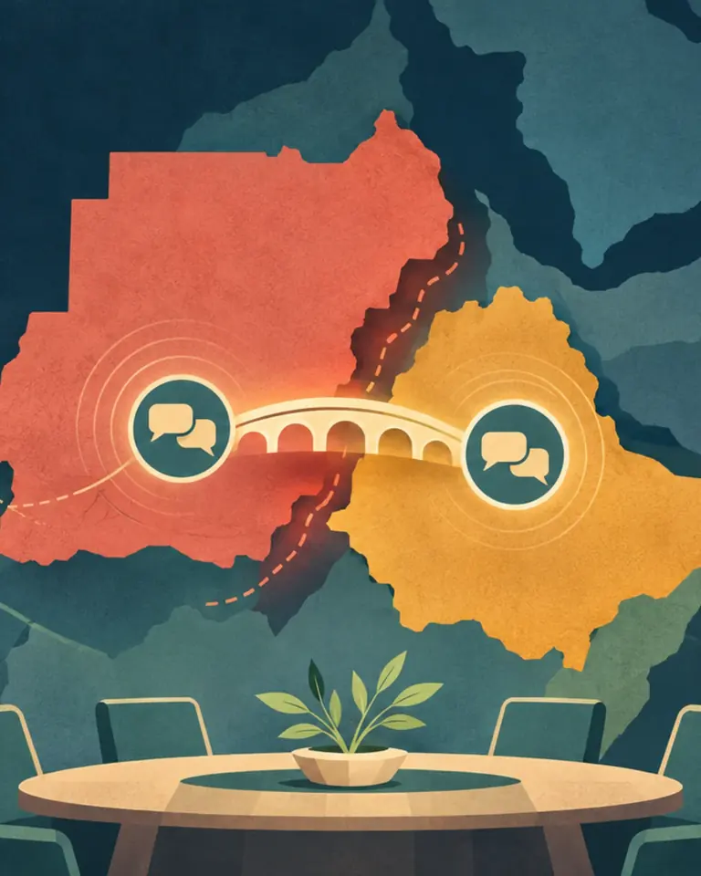
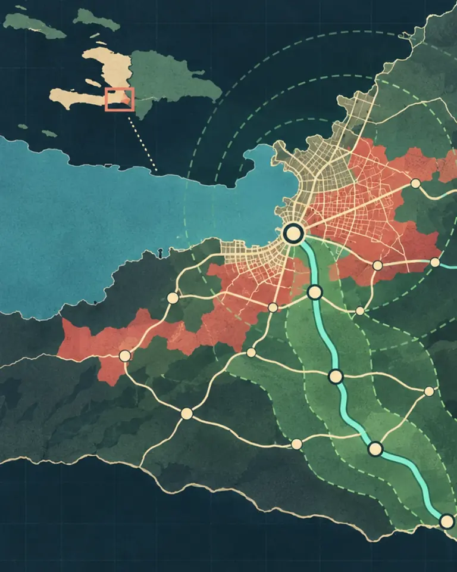
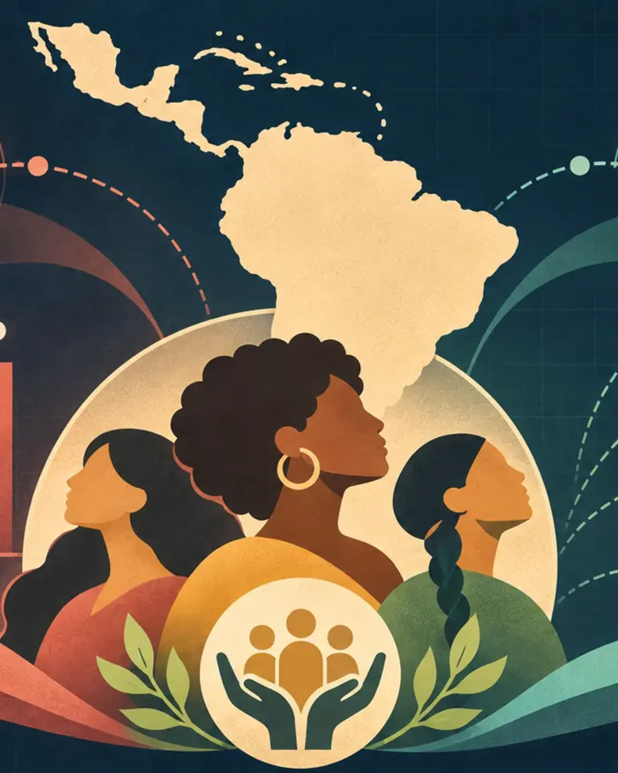
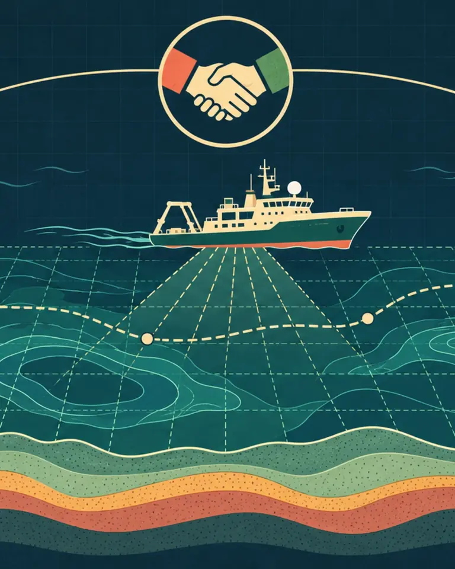

Africa · IMG-01
Ethiopia–Sudan dialogue
Ready for draft
Neutral diplomatic graphic; not an authoritative border or control map.
Text-free 4:5 editorial graphics for the 25 November update package. The wide masters and full-resolution crops remain separate delivery assets; this isolated page uses verified 768×960 preview proxies.

Neutral diplomatic graphic; not an authoritative border or control map.

No violence depiction; cannot establish routes, control, casualties or operational success.
Procedural symbolism only; no real-person likeness or criminality claim.

Decorative comparison graphic; the sourced measures remain in the article text.
Anonymous procedural symbols; strict accused/alleged wording remains required.

Survey and cooperation only; not drilling, extraction, discovery or authoritative maritime boundaries.